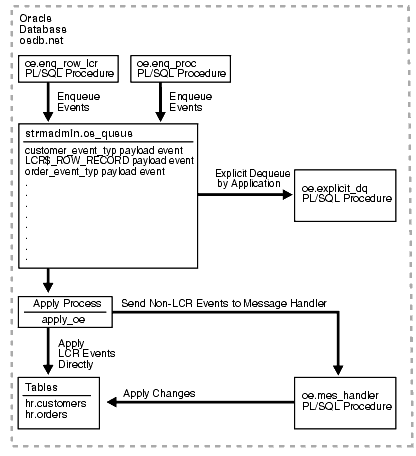

23 Oracle Streams Messaging Examples
The examples illustrate a messaging environment that can be constructed using Oracle Streams. The examples assume you are in a SQL*Plus testing environment with access to a database named db01.
Topics:
-
Dequeuing Messages Explicitly and Querying for Applied Messages
-
Enqueuing and Dequeuing Messages Using JMS
See Also:
Oracle Streams Concepts and Administration for more information about messaging and
ANYDATAqueues
23.1 Overview of Messaging Example
This example illustrates using a single ANYDATA queue to create an Oracle Streams messaging environment in which message payloads of different types are stored in the same queue. Specifically, this example illustrates the following messaging features of Oracle Streams:
-
Enqueuing messages containing order payload as
ANYDATApayloads -
Enqueuing messages containing customer payload as
ANYDATApayloads -
Enqueuing messages containing row LCRs as
ANYDATApayloads -
Creating a rule set for applying the events
-
Creating an evaluation context used by the rule set
-
Creating an Oracle Streams apply process to dequeue and process the events based on rules
-
Creating a message handler and associating it with the apply process
-
Explicitly dequeuing and processing events based on rules without using the apply process
Figure 23-1 provides an overview of this environment.
Figure 23-1 Example Oracle Streams Messaging Environment
Description of "Figure 23-1 Example Oracle Streams Messaging Environment"
23.2 Setting Up Users and Creating an ANYDATA Queue
Because the examples in this chapter use the oe sample schema, the oe user must have privileges to run the subprograms in the DBMS_AQ package. This is accomplished in Example 23-1.
Note:
The oe user is specified as the queue user when the ANYDATA queue is created in Example 23-2. The SET_UP_QUEUE procedure grants the oe user enqueue and dequeue privileges on the queue, but the oe user also needs EXECUTE privilege on the DBMS_AQ package to enqueue and dequeue messages.
Most of the configuration and administration actions illustrated in these examples are performed by the Oracle Streams administrator strmadmin. Example 23-1 also creates this user and grants the necessary privileges. These privileges enable the user to run subprograms in packages related to Oracle Streams, create rule sets, create rules, and monitor the Oracle Streams environment by querying data dictionary views.
In Example 23-1, you connect to database db01 as a user with administrative privileges.
Note:
-
The
SELECT_CATALOG_ROLEis not required for the Oracle Streams administrator. It is granted in this example so that the Oracle Streams administrator can monitor the environment easily. -
If you plan to use the Oracle Streams tool in Oracle Enterprise Manager, then grant the Oracle Streams administrator
SELECTANYDICTIONARYprivilege, in addition to the privileges shown in this step.
In Example 23-2, you connect to database db01 as administrator user strmadmin to create ANYDATA queue oe_queue. The SET_UP_QUEUE procedure creates a queue table for the queue and then creates and starts the queue.
In Example 23-3, you connect to database db01 as administrator user strmadmin to grant the oe user privileges on queue oe_queue, create agent explicit_enq that will be used to perform explicit enqueue operations on the queue, and associate the oe user with the agent.
Queue oe_queue is a secure queue because it was created using SET_UP_QUEUE. For a user to perform enqueue and dequeue operations on a secure queue, the user must be configured as a secure queue user of the queue. Associating the oe user with agent explicit_enq enables the oe user to perform enqueue operations on this queue.
Example 23-1 Setting Up ANYDATA Users
GRANT EXECUTE ON DBMS_AQ TO oe;
CREATE USER strmadmin IDENTIFIED BY strmadmin DEFAULT TABLESPACE example;
GRANT EXECUTE ON DBMS_APPLY_ADM TO strmadmin;
GRANT EXECUTE ON DBMS_AQ TO strmadmin;
GRANT EXECUTE ON DBMS_AQADM TO strmadmin;
GRANT EXECUTE ON DBMS_STREAMS_ADM TO strmadmin;
BEGIN
DBMS_RULE_ADM.GRANT_SYSTEM_PRIVILEGE(
privilege => DBMS_RULE_ADM.CREATE_RULE_SET_OBJ,
grantee => 'strmadmin',
grant_option => FALSE);
DBMS_RULE_ADM.GRANT_SYSTEM_PRIVILEGE(
privilege => DBMS_RULE_ADM.CREATE_RULE_OBJ,
grantee => 'strmadmin',
grant_option => FALSE);
DBMS_RULE_ADM.GRANT_SYSTEM_PRIVILEGE(
privilege => DBMS_RULE_ADM.CREATE_EVALUATION_CONTEXT_OBJ,
grantee => 'strmadmin',
grant_option => FALSE);
END;
/
Example 23-2 Creating an ANYDATA Queue
SET ECHO OFF
SET VERIFY OFF
ACCEPT password CHAR PROMPT 'Enter the password for STRMADMIN: ' HIDE
CONNECT strmadmin/&password@db01;
set echo on
BEGIN
DBMS_STREAMS_ADM.SET_UP_QUEUE(
queue_table => 'oe_queue_table',
queue_name => 'oe_queue');
END;
/
Example 23-3 Enabling Enqueue on the ANYDATA Queue
SET ECHO OFF
SET VERIFY OFF
ACCEPT password CHAR PROMPT 'Enter the password for STRMADMIN: ' HIDE
CONNECT strmadmin/&password@db01;
set echo on
BEGIN
SYS.DBMS_AQADM.GRANT_QUEUE_PRIVILEGE(
privilege => 'ALL',
queue_name => 'strmadmin.oe_queue',
grantee => 'oe');
SYS.DBMS_AQADM.CREATE_AQ_AGENT(
agent_name => 'explicit_enq');
DBMS_AQADM.ENABLE_DB_ACCESS(
agent_name => 'explicit_enq',
db_username => 'oe');
END;
/23.3 Creating Enqueue Procedures
The examples in this section create two PL/SQL procedures that enqueue messages into the ANYDATA queue oe_queue. One procedure enqueues non-LCR messages, and the other procedure enqueues row LCR messages.
In Example 23-4, you connect to database db01 as sample schema user oe to create a type to represent orders based on the columns in the oe.orders table. This type is used for messages that are enqueued into the ANYDATA queue oe_queue. The type attributes include the columns in the oe.orders table, along with one extra attribute named action. The value of the action attribute for instances of this type is used to determine the correct action to perform on the instance (either apply process dequeue or explicit dequeue).
In Example 23-5, you connect to database db01 as sample schema user oe to create a type to represent customers based on the columns in the oe.customers table. This type is used for messages that are enqueued into the ANYDATA queue oe_queue. The type attributes include the columns in the oe.customers table, along with one extra attribute named action. The value of the action attribute for instances of this type is used to determine the correct action to perform on the instance (either apply process dequeue or explicit dequeue).
Note:
This example assumes you have dropped the cust_geo_location column from the oe.customers table. This column is useful only with Oracle Spatial.
In Example 23-6, you connect to database db01 as sample schema user oe to create a PL/SQL procedure called enq_proc to enqueue non-LCR messages into ANYDATA queue oe_queue.
Note:
A single enqueued message can be dequeued by both an apply process and an explicit dequeue, but the examples in this chapter do not illustrate this capability.
In Example 23-7, you connect to database db01 as sample schema user oe to create a PL/SQL procedure called enq_row_lcr that constructs a row LCR and then enqueues the row LCR into ANYDATA queue oe_queue.
See Also:
Oracle Database PL/SQL Packages and Types Reference for more information about LCR constructors
Example 23-4 Creating an Orders Type
SET ECHO OFF SET VERIFY OFF ACCEPT password CHAR PROMPT 'Enter the password for OE: ' HIDE CONNECT oe/&password@db01; set echo on CREATE TYPE order_event_typ AS OBJECT( order_id NUMBER(12), order_date TIMESTAMP(6) WITH LOCAL TIME ZONE, order_mode VARCHAR2(8), customer_id NUMBER(6), order_status NUMBER(2), order_total NUMBER(8,2), sales_rep_id NUMBER(6), promotion_id NUMBER(6), action VARCHAR(7)); /
Example 23-5 Creating a Customers Type
SET ECHO OFFSET VERIFY OFFACCEPT password CHAR PROMPT 'Enter the password for OE: ' HIDECONNECT oe/&password@db01;set echo on CREATE TYPE customer_event_typ AS OBJECT( customer_id NUMBER(6), cust_first_name VARCHAR2(20), cust_last_name VARCHAR2(20), cust_address CUST_ADDRESS_TYP, phone_numbers PHONE_LIST_TYP, nls_language VARCHAR2(3), nls_territory VARCHAR2(30), credit_limit NUMBER(9,2), cust_email VARCHAR2(30), account_mgr_id NUMBER(6), date_of_birth DATE, marital_status VARCHAR2(20), gender VARCHAR2(1), income_level VARCHAR2(20), action VARCHAR(7)); /
Example 23-6 Creating a Procedure to Enqueue Non-LCR Messages
SET ECHO OFFSET VERIFY OFFACCEPT password CHAR PROMPT 'Enter the password for OE: ' HIDECONNECT oe/&password@db01;set echo on
CREATE PROCEDURE oe.enq_proc (event IN ANYDATA) IS
enqopt DBMS_AQ.ENQUEUE_OPTIONS_T;
mprop DBMS_AQ.MESSAGE_PROPERTIES_T;
enq_eventid RAW(16);
BEGIN
mprop.SENDER_ID := SYS.AQ$_AGENT('explicit_enq', NULL, NULL);
DBMS_AQ.ENQUEUE(
queue_name => 'strmadmin.oe_queue',
enqueue_options => enqopt,
message_properties => mprop,
payload => event,
msgid => enq_eventid);
END;
/
Example 23-7 Creating a Procedure to Construct and Enqueue Row LCR Events
SET ECHO OFFSET VERIFY OFFACCEPT password CHAR PROMPT 'Enter the password for OE: ' HIDECONNECT oe/&password@db01;set echo on
CREATE PROCEDURE oe.enq_row_lcr(
source_dbname VARCHAR2,
cmd_type VARCHAR2,
obj_owner VARCHAR2,
obj_name VARCHAR2,
old_vals SYS.LCR$_ROW_LIST,
new_vals SYS.LCR$_ROW_LIST)
AS
eopt DBMS_AQ.ENQUEUE_OPTIONS_T;
mprop DBMS_AQ.MESSAGE_PROPERTIES_T;
enq_msgid RAW(16);
row_lcr SYS.LCR$_ROW_RECORD;
BEGIN
mprop.SENDER_ID := SYS.AQ$_AGENT('explicit_enq', NULL, NULL);
row_lcr := SYS.LCR$_ROW_RECORD.CONSTRUCT(
source_database_name => source_dbname,
command_type => cmd_type,
object_owner => obj_owner,
object_name => obj_name,
old_values => old_vals,
new_values => new_vals);
DBMS_AQ.ENQUEUE(
queue_name => 'strmadmin.oe_queue',
enqueue_options => eopt,
message_properties => mprop,
payload => ANYDATA.ConvertObject(row_lcr),
msgid => enq_msgid);
END enq_row_lcr;
/23.4 Configuring an Apply Process
The examples in this section configure an apply process to apply the user-enqueued messages in the ANYDATA queue oe_queue.
In Example 23-8, you connect to database db01 as sample schema user oe to create a function called get_oe_action and to grant EXECUTE privilege on the function to administrator user strmadmin.
This function determines the value of the action attribute in the messages in queue oe_queue. It is used in rules later in this chapter to determine the value of the action attribute for an event. Then, the clients of the rules engine perform the appropriate action for the event (either dequeue by apply process or explicit dequeue). In this example, the clients of the rules engine are the apply process and the oe.explicit_dq PL/SQL procedure.
In Example 23-9, you connect to database db01 as sample schema user oe to create a PL/SQL procedure called mes_handler that is used as a message handler by the apply process. You also grant EXECUTE privilege on this procedure to administrator user strmadmin. This procedure takes the payload in a user-enqueued message of type oe.order_event_typ or oe.customer_event_typ and inserts it as a row in the oe.orders table or oe.customers table, respectively.
In Example 23-10, you connect to database db01 as administrator user strmadmin to create an evaluation context for the rule set.
In Example 23-11, you connect to database db01 as administrator user strmadmin to create a rule set for the apply process.
In Example 23-12, you connect to database db01 as administrator user strmadmin to create a rule that evaluates to TRUE if the action value of a message is apply. Notice that tab.user_data is passed to the oe.get_oe_action function. The tab.user_data column holds the event payload in a queue table. The table alias for the queue table was specified as tab in Example 23-10.
In Example 23-13, you connect to database db01 as administrator user strmadmin to create a rule that evaluates to TRUE if the event in the queue is a row LCR that changes either the oe.orders table or the oe.customers table. This rule enables the apply process to apply user-enqueued changes to the tables directly.
For convenience, this rule uses the Oracle-supplied evaluation context SYS.STREAMS$_EVALUATION_CONTEXT because the rule is used to evaluate LCRs. When this rule is added to the rule set, the Oracle-supplied evaluation context is used for the rule during evaluation instead of evaluation context oe_eval_context created in Example 23-10.
In Example 23-14, you connect to database db01 as administrator user strmadmin to add the apply_action rule created in Example 23-12 and the apply_lcrs rule created in Example 23-13 to the apply_oe_rs rule set created in Example 23-11.
In Example 23-15, you connect to database db01 as administrator user strmadmin to create an apply process that is associated with queue oe_queue, that uses the apply_oe_rs rule set, and that uses the mes_handler procedure as a message handler.
Because oe was specified as the apply user when the apply process was created in Example 23-15, you must grant this user EXECUTE privilege on the strmadmin.apply_oe_rs rule set used by the apply process. You connect to database db01 as administrator user strmadmin to accomplish this in Example 23-16.
In Example 23-17, you connect to database db01 as administrator user strmadmin to start the apply process with the disable_on_error parameter set to n so that the apply process is not disabled if it encounters an error.
Example 23-8 Creating a Function to Determine the Value of the Action Attribute
SET ECHO OFFSET VERIFY OFFACCEPT password CHAR PROMPT 'Enter the password for OE: ' HIDECONNECT oe/&password@db01;set echo on
CREATE FUNCTION oe.get_oe_action (event IN ANYDATA)
RETURN VARCHAR2
IS
ord oe.order_event_typ;
cust oe.customer_event_typ;
num NUMBER;
type_name VARCHAR2(61);
BEGIN
type_name := event.GETTYPENAME;
IF type_name = 'OE.ORDER_EVENT_TYP' THEN
num := event.GETOBJECT(ord);
RETURN ord.action;
ELSIF type_name = 'OE.CUSTOMER_EVENT_TYP' THEN
num := event.GETOBJECT(cust);
RETURN cust.action;
ELSE
RETURN NULL;
END IF;
END;
/
GRANT EXECUTE ON get_oe_action TO strmadmin;
Example 23-9 Creating a Message Handler
set echo offset verify offACCEPT password CHAR PROMPT 'Enter the password for OE: ' HIDECONNECT oe/&password@db01;set echo on
CREATE PROCEDURE oe.mes_handler (event IN ANYDATA) IS
ord oe.order_event_typ;
cust oe.customer_event_typ;
num NUMBER;
type_name VARCHAR2(61);
BEGIN
type_name := event.GETTYPENAME;
IF type_name = 'OE.ORDER_EVENT_TYP' THEN
num := event.GETOBJECT(ord);
INSERT INTO oe.orders VALUES (ord.order_id, ord.order_date,
ord.order_mode, ord.customer_id, ord.order_status, ord.order_total,
ord.sales_rep_id, ord.promotion_id);
ELSIF type_name = 'OE.CUSTOMER_EVENT_TYP' THEN
num := event.GETOBJECT(cust);
INSERT INTO oe.customers VALUES (cust.customer_id, cust.cust_first_name,
cust.cust_last_name, cust.cust_address, cust.phone_numbers,
cust.nls_language, cust.nls_territory, cust.credit_limit, cust.cust_email,
cust.account_mgr_id, cust.date_of_birth, cust.marital_status,
cust.gender, cust.income_level);
END IF;
END;
/
GRANT EXECUTE ON mes_handler TO strmadmin;
Example 23-10 Creating an Evaluation Context for the Rule Set
SET ECHO OFF
SET VERIFY OFF
ACCEPT password CHAR PROMPT 'Enter the password for STRMADMIN: ' HIDE
CONNECT strmadmin/&password@db01;
set echo on
DECLARE
table_alias SYS.RE$TABLE_ALIAS_LIST;
BEGIN
table_alias := SYS.RE$TABLE_ALIAS_LIST(
SYS.RE$TABLE_ALIAS('tab', 'strmadmin.oe_queue_table'));
DBMS_RULE_ADM.CREATE_EVALUATION_CONTEXT(
evaluation_context_name => 'oe_eval_context',
table_aliases => table_alias);
END;
/
Example 23-11 Creating a Rule Set for the Apply Process
SET ECHO OFF
SET VERIFY OFF
ACCEPT password CHAR PROMPT 'Enter the password for STRMADMIN: ' HIDE
CONNECT strmadmin/&password@db01;
set echo on
BEGIN
DBMS_RULE_ADM.CREATE_RULE_SET(
rule_set_name => 'apply_oe_rs',
evaluation_context => 'strmadmin.oe_eval_context');
END;
/
Example 23-12 Creating a Rule that Evaluates to TRUE if Action Is Apply
SET ECHO OFF
SET VERIFY OFF
ACCEPT password CHAR PROMPT 'Enter the password for STRMADMIN: ' HIDE
CONNECT strmadmin/&password@db01;
set echo on
BEGIN
DBMS_RULE_ADM.CREATE_RULE(
rule_name => 'strmadmin.apply_action',
condition => 'oe.get_oe_action(tab.user_data) = ''APPLY'' ');
END;
/
Example 23-13 Creating a Rule that Evaluates to TRUE for Row LCR Events
SET ECHO OFF
SET VERIFY OFF
ACCEPT password CHAR PROMPT 'Enter the password for STRMADMIN: ' HIDE
CONNECT strmadmin/&password@db01;
set echo on
BEGIN
DBMS_RULE_ADM.CREATE_RULE(
rule_name => 'apply_lcrs',
condition => ':dml.GET_OBJECT_OWNER() = ''OE'' AND ' ||
' (:dml.GET_OBJECT_NAME() = ''ORDERS'' OR ' ||
':dml.GET_OBJECT_NAME() = ''CUSTOMERS'') ',
evaluation_context => 'SYS.STREAMS$_EVALUATION_CONTEXT');
END;
/
Example 23-14 Adding Rules to the Rule Set
SET ECHO OFFSET VERIFY OFFACCEPT password CHAR PROMPT 'Enter the password for STRMADMIN: ' HIDECONNECT strmadmin/&password@db01;set echo on
BEGIN
DBMS_RULE_ADM.ADD_RULE(
rule_name => 'apply_action',
rule_set_name => 'apply_oe_rs');
DBMS_RULE_ADM.ADD_RULE(
rule_name => 'apply_lcrs',
rule_set_name => 'apply_oe_rs');
END;
/
Example 23-15 Creating an Apply Process
SET ECHO OFFSET VERIFY OFFACCEPT password CHAR PROMPT 'Enter the password for STRMADMIN: ' HIDECONNECT strmadmin/&password@db01;set echo on
BEGIN
DBMS_APPLY_ADM.CREATE_APPLY(
queue_name => 'strmadmin.oe_queue',
apply_name => 'apply_oe',
rule_set_name => 'strmadmin.apply_oe_rs',
message_handler => 'oe.mes_handler',
apply_user => 'oe',
apply_captured => false);
END;
/
Example 23-16 Granting EXECUTE Privilege on the Rule Set To oe User
SET ECHO OFF
SET VERIFY OFF
ACCEPT password CHAR PROMPT 'Enter the password for STRMADMIN: ' HIDECONNECT strmadmin/&password@db01;set echo on
BEGIN
DBMS_RULE_ADM.GRANT_OBJECT_PRIVILEGE(
privilege => DBMS_RULE_ADM.EXECUTE_ON_RULE_SET,
object_name => 'strmadmin.apply_oe_rs',
grantee => 'oe',
grant_option => FALSE);
END;
/
Example 23-17 Starting the Apply Process
SET ECHO OFFSET VERIFY OFFACCEPT password CHAR PROMPT 'Enter the password for STRMADMIN: ' HIDECONNECT strmadmin/&password@db01;set echo on
BEGIN
DBMS_APPLY_ADM.SET_PARAMETER(
apply_name => 'apply_oe',
parameter => 'disable_on_error',
value => 'n');
DBMS_APPLY_ADM.START_APPLY(
apply_name => 'apply_oe');
END;
/
23.5 Configuring Explicit Dequeue
The examples in this section illustrate how to configure explicit dequeue of messages based on message contents.
In Example 23-18, you connect to database db01 as administrator user strmadmin to create agent explicit_dq. This agent is used to perform explicit dequeue operations on the oe_queue queue.
The oe_queue queue is a secure queue because it was created using SET_UP_QUEUE in Example 23-2. For a user to perform enqueue and dequeue operations on a secure queue, the user must be configured as a secure queue user of the queue.
In Example 23-19, you connect to database db01 as administrator user strmadmin to associate the oe user with agent explicit_dq. The oe user can perform dequeue operations on the oe_queue queue when the agent is used to create a subscriber to the queue in Example 23-20.
In Example 23-20, you connect to database db01 as administrator user strmadmin to add a subscriber to the oe_queue queue. This subscriber will perform explicit dequeues of messages. A subscriber rule is used to dequeue any messages where the action value is not apply. If the action value is apply for a message, then the message is ignored by the subscriber. Such messages are dequeued and processed by the apply process.
In Example 23-21, you connect to database db01 as sample schema user oe to create a PL/SQL procedure called explicit_dq to dequeue messages explicitly using the subscriber created in Example 23-20.
The procedure commits after the dequeue of the messages. The commit informs the queue that the dequeued messages have been consumed successfully by this subscriber.
The procedure can process multiple transactions and uses two exception handlers. Exception handler next_trans moves to the next transaction, and exception handler no_messages exits the loop when there are no more messages.
Example 23-18 Creating an Agent for Explicit Dequeue
SET ECHO OFFSET VERIFY OFFACCEPT password CHAR PROMPT 'Enter the password for STRMADMIN: ' HIDECONNECT strmadmin/&password@db01;set echo on
BEGIN
SYS.DBMS_AQADM.CREATE_AQ_AGENT(
agent_name => 'explicit_dq');
END;
/
Example 23-19 Associating User oe with Agent explicit_dq
set echo offset verify offACCEPT password CHAR PROMPT 'Enter the password for STRMADMIN: ' HIDECONNECT strmadmin/&password@db01;set echo on
BEGIN
DBMS_AQADM.ENABLE_DB_ACCESS(
agent_name => 'explicit_dq',
db_username => 'oe');
END;
/
Example 23-20 Adding a Subscriber to the oe_queue Queue
SET ECHO OFFSET VERIFY OFFACCEPT password CHAR PROMPT 'Enter the password for STRMADMIN: ' HIDECONNECT strmadmin/&password@db01;set echo on
DECLARE
subscriber SYS.AQ$_AGENT;
BEGIN
subscriber := SYS.AQ$_AGENT('explicit_dq', NULL, NULL);
SYS.DBMS_AQADM.ADD_SUBSCRIBER(
queue_name => 'strmadmin.oe_queue',
subscriber => subscriber,
rule => 'oe.get_oe_action(tab.user_data) != ''APPLY''');
END;
/
Example 23-21 Creating a Procedure to Dequeue Messages Explicitly
SET ECHO OFFSET VERIFY OFF
ACCEPT password CHAR PROMPT 'Enter the password for OE: ' HIDECONNECT oe/&password@db01;set echo on
CREATE PROCEDURE oe.explicit_dq (consumer IN VARCHAR2) AS
deqopt DBMS_AQ.DEQUEUE_OPTIONS_T;
mprop DBMS_AQ.MESSAGE_PROPERTIES_T;
msgid RAW(16);
payload ANYDATA;
new_messages BOOLEAN := TRUE;
ord oe.order_event_typ;
cust oe.customer_event_typ;
tc pls_integer;
next_trans EXCEPTION;
no_messages EXCEPTION;
pragma exception_init (next_trans, -25235);
pragma exception_init (no_messages, -25228);
BEGIN
deqopt.consumer_name := consumer;
deqopt.wait := 1;
WHILE (new_messages) LOOP
BEGIN
DBMS_AQ.DEQUEUE(
queue_name => 'strmadmin.oe_queue',
dequeue_options => deqopt,
message_properties => mprop,
payload => payload,
msgid => msgid);
COMMIT;
deqopt.navigation := DBMS_AQ.NEXT;
DBMS_OUTPUT.PUT_LINE('Message Dequeued');
DBMS_OUTPUT.PUT_LINE('Type Name := ' || payload.GetTypeName);
IF (payload.GetTypeName = 'OE.ORDER_EVENT_TYP') THEN
tc := payload.GetObject(ord);
DBMS_OUTPUT.PUT_LINE('order_id - ' || ord.order_id);
DBMS_OUTPUT.PUT_LINE('order_date - ' || ord.order_date);
DBMS_OUTPUT.PUT_LINE('order_mode - ' || ord.order_mode);
DBMS_OUTPUT.PUT_LINE('customer_id - ' || ord.customer_id);
DBMS_OUTPUT.PUT_LINE('order_status - ' || ord.order_status);
DBMS_OUTPUT.PUT_LINE('order_total - ' || ord.order_total);
DBMS_OUTPUT.PUT_LINE('sales_rep_id - ' || ord.sales_rep_id);
DBMS_OUTPUT.PUT_LINE('promotion_id - ' || ord.promotion_id);
END IF;
IF (payload.GetTypeName = 'OE.CUSTOMER_EVENT_TYP') THEN
tc := payload.GetObject(cust);
DBMS_OUTPUT.PUT_LINE('customer_id - ' || cust.customer_id);
DBMS_OUTPUT.PUT_LINE('cust_first_name - ' || cust.cust_first_name);
DBMS_OUTPUT.PUT_LINE('cust_last_name - ' || cust.cust_last_name);
DBMS_OUTPUT.PUT_LINE('street_address - ' ||
cust.cust_address.street_address);
DBMS_OUTPUT.PUT_LINE('postal_code - ' ||
cust.cust_address.postal_code);
DBMS_OUTPUT.PUT_LINE('city - ' || cust.cust_address.city);
DBMS_OUTPUT.PUT_LINE('state_province - ' ||
cust.cust_address.state_province);
DBMS_OUTPUT.PUT_LINE('country_id - ' ||
cust.cust_address.country_id);
DBMS_OUTPUT.PUT_LINE('phone_number1 - ' || cust.phone_numbers(1));
DBMS_OUTPUT.PUT_LINE('phone_number2 - ' || cust.phone_numbers(2));
DBMS_OUTPUT.PUT_LINE('phone_number3 - ' || cust.phone_numbers(3));
DBMS_OUTPUT.PUT_LINE('nls_language - ' || cust.nls_language);
DBMS_OUTPUT.PUT_LINE('nls_territory - ' || cust.nls_territory);
DBMS_OUTPUT.PUT_LINE('credit_limit - ' || cust.credit_limit);
DBMS_OUTPUT.PUT_LINE('cust_email - ' || cust.cust_email);
DBMS_OUTPUT.PUT_LINE('account_mgr_id - ' || cust.account_mgr_id);
DBMS_OUTPUT.PUT_LINE('date_of_birth - ' || cust.date_of_birth);
DBMS_OUTPUT.PUT_LINE('marital_status - ' || cust.marital_status);
DBMS_OUTPUT.PUT_LINE('gender - ' || cust.gender);
DBMS_OUTPUT.PUT_LINE('income_level - ' || cust.income_level);
END IF;
EXCEPTION
WHEN next_trans THEN
deqopt.navigation := DBMS_AQ.NEXT_TRANSACTION;
WHEN no_messages THEN
new_messages := FALSE;
DBMS_OUTPUT.PUT_LINE('No more messagess');
END;
END LOOP;
END;
/
23.6 Enqueuing Messages
The examples in this section illustrate how to enqueue non-LCR messages and row LCR messages into a queue.
Note:
It is possible to dequeue user-enqueued LCRs explicitly, but these examples do not illustrate this capability.
In Example 23-22, you connect to database db01 as sample schema user oe to enqueue two messages with apply for the action value. Based on the apply process rules, the apply process dequeues and processes these messages with the oe.mes_handler message handler procedure created in Example 23-9. The COMMIT after the enqueues makes these two enqueues part of the same transaction. An enqueued message is not visible until the session that enqueued it commits the enqueue.
In Example 23-23, you connect to database db01 as sample schema user oe to enqueue two messages with dequeue for the action value. The oe.explicit_dq procedure created in Example 23-21 dequeues these messages because the action is not apply. Based on the apply process rules, the apply process ignores these messages. The COMMIT after the enqueues makes these two enqueues part of the same transaction.
In Example 23-24, you connect to database db01 as sample schema user oe to create a row LCR that inserts a row into the oe.orders table and another LCR that updates that row. The apply process applies these messages directly.
Note:
Enqueued LCRs should commit at transaction boundaries. In this example, a COMMIT statement is run after each enqueue, making each enqueue a separate transaction. However, you can perform multiple LCR enqueues before a commit if there is more than one LCR in a transaction.
Example 23-22 Enqueuing Non-LCR Messages to Be Dequeued by an Apply Process
SET ECHO OFFSET VERIFY OFFACCEPT password CHAR PROMPT 'Enter the password for OE: ' HIDECONNECT oe/&password@db01;set echo on
BEGIN
oe.enq_proc(ANYDATA.convertobject(oe.order_event_typ(
2500,'05-MAY-01','online',117,3,44699,161,NULL,'APPLY')));
END;
/
BEGIN
oe.enq_proc(ANYDATA.convertobject(oe.customer_event_typ(
990,'Hester','Prynne',oe.cust_address_typ('555 Beacon Street',
'02109','Boston','MA','US'),oe.phone_list_typ('+1 617 123 4104',
'+1 617 083 4381','+1 617 742 5813'),'i','AMERICA',5000,
'a@scarlet_letter.com',145,NULL,'SINGLE','F','UNDER 50,000','APPLY')));
END;
/
COMMIT;
Example 23-23 Enqueuing Non-LCR Messages to Be Dequeued Explicitly
SET ECHO OFFSET VERIFY OFFACCEPT password CHAR PROMPT 'Enter the password for OE: ' HIDECONNECT oe/&password@db01;set echo on
BEGIN
oe.enq_proc(ANYDATA.convertobject(oe.order_event_typ(
2501,'22-JAN-00','direct',117,3,22788,161,NULL,'DEQUEUE')));
END;
/
BEGIN
oe.enq_proc(ANYDATA.convertobject(oe.customer_event_typ(
991,'Nick','Carraway',oe.cust_address_typ('10th Street',
'11101','Long Island','NY','US'),oe.phone_list_typ('+1 718 786 2287',
'+1 718 511 9114', '+1 718 888 4832'),'i','AMERICA',3000,
'nick@great_gatsby.com',149,NULL,'MARRIED','M','OVER 150,000','DEQUEUE')));
END;
/
COMMIT;
Example 23-24 Enqueuing Row LCRs to Be Dequeued by an Apply Process
SET ECHO OFF
SET VERIFY OFF
ACCEPT password CHAR PROMPT 'Enter the password for OE: ' HIDE
CONNECT oe/&password@db01;
set echo on
DECLARE
newunit1 SYS.LCR$_ROW_UNIT;
newunit2 SYS.LCR$_ROW_UNIT;
newunit3 SYS.LCR$_ROW_UNIT;
newunit4 SYS.LCR$_ROW_UNIT;
newunit5 SYS.LCR$_ROW_UNIT;
newunit6 SYS.LCR$_ROW_UNIT;
newunit7 SYS.LCR$_ROW_UNIT;
newunit8 SYS.LCR$_ROW_UNIT;
newvals SYS.LCR$_ROW_LIST;
BEGIN
newunit1 := SYS.LCR$_ROW_UNIT(
'ORDER_ID',ANYDATA.ConvertNumber(2502),DBMS_LCR.NOT_A_LOB,NULL,NULL);
newunit2 := SYS.LCR$_ROW_UNIT(
'ORDER_DATE',ANYDATA.ConvertTimestampLTZ('04-NOV-00'),DBMS_LCR.NOT_A_LOB,
NULL,NULL);
newunit3 := SYS.LCR$_ROW_UNIT(
'ORDER_MODE',ANYDATA.ConvertVarchar2('online'),DBMS_LCR.NOT_A_LOB,NULL,NULL);
newunit4 := SYS.LCR$_ROW_UNIT(
'CUSTOMER_ID',ANYDATA.ConvertNumber(145),DBMS_LCR.NOT_A_LOB,NULL,NULL);
newunit5 := SYS.LCR$_ROW_UNIT(
'ORDER_STATUS',ANYDATA.ConvertNumber(3),DBMS_LCR.NOT_A_LOB,NULL,NULL);
newunit6 := SYS.LCR$_ROW_UNIT(
'ORDER_TOTAL',ANYDATA.ConvertNumber(35199),DBMS_LCR.NOT_A_LOB,NULL,NULL);
newunit7 := SYS.LCR$_ROW_UNIT(
'SALES_REP_ID',ANYDATA.ConvertNumber(160),DBMS_LCR.NOT_A_LOB,NULL,NULL);
newunit8 := SYS.LCR$_ROW_UNIT(
'PROMOTION_ID',ANYDATA.ConvertNumber(1),DBMS_LCR.NOT_A_LOB,NULL,NULL);
newvals := SYS.LCR$_ROW_LIST(
newunit1,newunit2,newunit3,newunit4,newunit5,newunit6,newunit7,newunit8);
oe.enq_row_lcr('DB01','INSERT','OE','ORDERS',NULL,newvals);
END;
/
COMMIT;
DECLARE
oldunit1 SYS.LCR$_ROW_UNIT;
oldunit2 SYS.LCR$_ROW_UNIT;
oldvals SYS.LCR$_ROW_LIST;
newunit1 SYS.LCR$_ROW_UNIT;
newvals SYS.LCR$_ROW_LIST;
BEGIN
oldunit1 := SYS.LCR$_ROW_UNIT(
'ORDER_ID',ANYDATA.ConvertNumber(2502),DBMS_LCR.NOT_A_LOB,NULL,NULL);
oldunit2 := SYS.LCR$_ROW_UNIT(
'ORDER_TOTAL',ANYDATA.ConvertNumber(35199),DBMS_LCR.NOT_A_LOB,NULL,NULL);
oldvals := SYS.LCR$_ROW_LIST(oldunit1,oldunit2);
newunit1 := SYS.LCR$_ROW_UNIT(
'ORDER_TOTAL',ANYDATA.ConvertNumber(5235),DBMS_LCR.NOT_A_LOB,NULL,NULL);
newvals := SYS.LCR$_ROW_LIST(newunit1);
oe.enq_row_lcr('DB01','UPDATE','OE','ORDERS',oldvals,newvals);
END;
/
COMMIT;23.7 Dequeuing Messages Explicitly and Querying for Applied Messages
The examples in this section illustrate how to dequeue messages explicitly and query messages that were applied by the apply process. The examples use messages that were enqueued in the previous section.
In Example 23-25, you connect to database db01 as sample schema user oe to run procedure explicit_dq, created in Example 23-21. You specify subscriber explicit_dq, added in Example 23-20, as the consumer of the messages you want to dequeue. In these examples, messages that are not dequeued explicitly by this procedure are dequeued by the apply process.
The example returns the payload of the messages enqueued in Example 23-23:
Message Dequeued Type Name := OE.ORDER_EVENT_TYP order_id - 2501 order_date - 22-JAN-00 12.00.00.000000 AM order_mode - direct customer_id - 117 order_status - 3 order_total - 22788 sales_rep_id - 161 promotion_id - Message Dequeued Type Name := OE.CUSTOMER_EVENT_TYP customer_id - 991 cust_first_name - Nick cust_last_name - Carraway street_address - 10th Street postal_code - 11101 city - Long Island state_province - NY country_id - US phone_number1 - +1 718 786 2287 phone_number2 - +1 718 511 9114 phone_number3 - +1 718 888 4832 nls_language - i nls_territory - AMERICA credit_limit - 3000 cust_email - nick@great_gatsby.com account_mgr_id - 149 date_of_birth - marital_status - MARRIED gender - M income_level - OVER 150,000 No more messages
Example 23-26, you connect to database db01 as sample schema user oe to query the oe.orders and oe.customers tables to see the rows corresponding to the messages applied by apply process apply_oe, created in Example 23-15.
The example returns three rows:
ORDER_ID ORDER_DATE CUSTOMER_ID ORDER_TOTAL
---------- ------------------------------ ----------- -----------
2500 05-MAY-01 12.00.00.000000 AM 117 44699
1 row selected.
CUST_FIRST_NAME CUST_LAST_NAME CUST_EMAIL
-------------------- -------------------- ------------------------------
Hester Prynne a@scarlet_letter.com
1 row selected.
ORDER_ID ORDER_DATE CUSTOMER_ID ORDER_TOTAL
---------- ------------------------------ ----------- -----------
2502 04-NOV-00 12.00.00.000000 AM 145 5235
1 row selected.Example 23-25 Dequeuing Messages Explicitly
SET ECHO OFF
SET VERIFY OFF
ACCEPT password CHAR PROMPT 'Enter the password for OE: ' HIDE
CONNECT oe/&password@db01;
set echo on
CREATE PROCEDURE oe.enq_proc (payload ANYDATA) IS
SET SERVEROUTPUT ON SIZE 100000;
EXEC oe.explicit_dq('explicit_dq');
Example 23-26 Querying for Applied Messages
SET ECHO OFF SET VERIFY OFF ACCEPT password CHAR PROMPT 'Enter the password for OE: ' HIDE CONNECT oe/&password@db01; set echo on CREATE PROCEDURE oe.enq_proc (payload ANYDATA) IS SELECT order_id, order_date, customer_id, order_total FROM oe.orders WHERE order_id = 2500; SELECT cust_first_name, cust_last_name, cust_email FROM oe.customers WHERE customer_id = 990; SELECT order_id, order_date, customer_id, order_total FROM oe.orders WHERE order_id = 2502;
23.8 Enqueuing and Dequeuing Messages Using JMS
The examples in this section illustrate how to enqueue non-LCR messages and row LCRs into a queue and then dequeue them using Java Message Service (JMS).
Note that the Oracle Database does not support JDK 1.2, JDK 1.3, JDK 1.4, JDK 5.n, and all classes12*.* files. You need to use the ojdbc6.jar and ojbc7.jar files with JDK 6.n and JDK 7.n, respectively. The following jar and zip files should be in the CLASSPATH based on the release of JDK you are using.
For JDK 6.n, the CLASSPATH must contain:
ORACLE_HOME/jdbc/lib/ojdbc6.jar
For JDK 7.n, the CLASSPATH must contain:
ORACLE_HOME/jdbc/lib/ojdbc7.jar
The following files are used for either JDK version:
ORACLE_HOME/lib/jta.jar ORACLE_HOME/xdk/lib/xmlparserv2.jar ORACLE_HOME/rdbms/jlib/xdb.jar ORACLE_HOME/rdbms/jlib/aqapi.jar ORACLE_HOME/rdbms/jlib/jmscommon.jar
Also, make sure LD_LIBRARY_PATH (Linux and Solaris) or PATH (Windows) includes ORACLE_HOME/lib.
These examples show sample schema user oe enqueuing JMS messages into a queue and agent explicit_dq dequeuing them. Agent explicit_dq was created in Example 23-18, associated with sample schema user oe in Example 23-19, and made a subscriber to queue oe_queue in Example 23-20.
Sample schema user oe was granted EXECUTE on DBMS_AQ in Example 23-1. In order for this user to use the Oracle JMS interface, it must have EXECUTE privilege on DBMS_AQIN as well. In Example 23-27, you connect to database db01 as a user with administrative privileges to grant the necessary privilege to oe.
See Also:
Enqueue of JMS types and XML types does not work with Oracle Streams ANYDATA queues unless you call DBMS_AQADM.ENABLE_JMS_TYPES(queue_table_name) after DBMS_STREAMS_ADM.SET_UP_QUEUE(). In Example 23-28, you connect to database db01 as administrator user strmadmin, created in Example 23-1, to run ENABLE_JMS_TYPES on ANYDATA queue table oe_queue_table, created in Example 23-2.
Note:
Enabling an Oracle Streams queue for these types may affect import/export of the queue table.
In Example 23-29, you connect to database db01 as sample schema user oe to create types address and person.
In Example 23-30, you use JPublisher to generate two Java classes named JPerson and JAddress for the person and address types, respectively. The input to JPublisher is a file called input.typ with the following lines:
SQL PERSON AS JPerson SQL ADDRESS AS JAddress
Example 23-31 is the Java code that you use to publish JMS text messages, LCRs, and non-LCR ADT messages into an Oracle Streams topic. It does the following:
-
Creates a
TopicConnectionFactoryusing the JDBC OCI driverNote:
The JDBC OCI driver is your only choice for accessing Oracle Streams through JMS.
-
Creates a
TopicSession -
Starts the connection
-
Creates method
publishUserMessages()to publish an ADT message and a JMS text message to an Oracle Streams topic -
Creates method
publishLcrMessages()to publish an XML LCR message to an Oracle Streams topic -
Publishes three messages, providing feedback as it proceeds
Method publishUserMessages() does the following:
-
Gets the topic
-
Creates a publisher
-
Specifies agent
explicit_enqto access queueoe_queue -
Creates a
PERSONADT message -
Sets the payload in the message
-
Specifies
explicit_dqas the recipient -
Publishes the
PERSONADT message -
Creates a JMS Text message
-
Publishes the JMS Text message
Method publishLcrMessages() does the following:
-
Gets the topic
-
Creates a publisher
-
Gets the JDBC connection
-
Specifies agent
explicit_enqto access queueoe_queue -
Creates an ADT message
-
Creates the LCR representation in XML
-
Creates the
XMLTypecontaining the LCR -
Sets the payload in the message
-
Specifies
explicit_dqas the recipient -
Publishes the LCR
The code is compiled in Example 23-33. For now, just save it as StreamsEnq.java.
Example 23-32 is the Java code you use to receive messages from an Oracle Streams topic. It does the following:
-
Creates a
TopicConnectionFactoryusing the JDBC OCI driverNote:
The JDBC OCI driver is your only choice for accessing Oracle Streams through JMS.
-
Creates a
TopicSession -
Starts the connection
-
Creates method
receiveMessages()to receive messages from an Oracle Streams topic -
Receives three messages, providing feedback as it proceeds
Method receiveMessages() does the following:
-
Gets the topic
-
Creates a
TopicReceiverto receive messages for consumerexplicit_dq -
Registers mappings for
ADDRESSandPERSONin the JMS typemap -
Registers a mapping for
XMLTypein the typemap (required for LCRs) -
Receives the enqueued messages
The code is compiled in Example 23-33. For now, just save it as StreamsDeq.java.
In Example 23-33, you compile the scripts.
In Example 23-34, you run the enqueue program, specifying values for ORACLE_SID, HOST, and PORT that are appropriate for your testing environment.
The example returns:
Publish message 1 -type PERSON Publish message 2 -type JMS TextMessage Publish message 3 - XMLType containing LCR ROW End of StreamsEnq Demo
In Example 23-35, you run the dequeue program, specifying values for ORACLE_SID, HOST, and PORT that are appropriate for your testing environment.
Example 23-27 Granting EXECUTE on DBMS_AQIN to User oe
GRANT EXECUTE on DBMS_AQIN to oe;
Example 23-28 Enabling JMS Types on an ANYDATA Queue
CONNECT strmadmin;
Enter password: password
BEGIN
DBMS_AQADM.ENABLE_JMS_TYPES('oe_queue_table');
END;
/Example 23-29 Creating Oracle Object Types address and person
CONNECT oe;
Enter password: password
CREATE TYPE address AS OBJECT (street VARCHAR (30), num NUMBER)
/
CREATE TYPE person AS OBJECT (name VARCHAR (30), home ADDRESS)
/
Example 23-30 Creating Java Classes That Map to Oracle Object Types
jpub -input=input.typ -user=OE/OE
Example 23-31 Java Code for Enqueuing Messages
import oracle.AQ.*;
import oracle.jms.*;
import javax.jms.*;
import java.lang.*;
import oracle.xdb.*;
public class StreamsEnq
{
public static void main (String args [])
throws java.sql.SQLException, ClassNotFoundException, JMSException
{
TopicConnectionFactory tc_fact= null;
TopicConnection t_conn = null;
TopicSession t_sess = null;
try
{
if (args.length < 3 )
System.out.println("Usage:java filename [SID] [HOST] [PORT]");
else
{
tc_fact = AQjmsFactory.getTopicConnectionFactory(
args[1], args[0], Integer.parseInt(args[2]), "oci8");
t_conn = tc_fact.createTopicConnection( "OE","OE");
t_sess = t_conn.createTopicSession(true, Session.CLIENT_ACKNOWLEDGE);
t_conn.start() ;
publishUserMessages(t_sess);
publishLcrMessages(t_sess);
t_sess.close() ;
t_conn.close() ;
System.out.println("End of StreamsEnq Demo") ;
}
}
catch (Exception ex)
{
System.out.println("Exception-1: " + ex);
ex.printStackTrace();
}
}
public static void publishUserMessages(TopicSession t_sess) throws Exception
{
Topic topic = null;
TopicPublisher t_pub = null;
JPerson pers = null;
JAddress addr = null;
TextMessage t_msg = null;
AdtMessage adt_msg = null;
AQjmsAgent agent = null;
AQjmsAgent[] recipList = null;
try
{
topic = ((AQjmsSession)t_sess).getTopic("strmadmin", "oe_queue");
t_pub = t_sess.createPublisher(topic);
agent = new AQjmsAgent("explicit_enq", null);
adt_msg = ((AQjmsSession)t_sess).createAdtMessage();
pers = new JPerson();
addr = new JAddress();
addr.setNum(new java.math.BigDecimal(500));
addr.setStreet("Oracle Pkwy");
pers.setName("Mark");
pers.setHome(addr);
adt_msg.setAdtPayload(pers);
((AQjmsMessage)adt_msg).setSenderID(agent);
System.out.println("Publish message 1 -type PERSON\n");
recipList = new AQjmsAgent[1];
recipList[0] = new AQjmsAgent("explicit_dq", null);
((AQjmsTopicPublisher)t_pub).publish(topic, adt_msg, recipList);
t_sess.commit();
t_msg = t_sess.createTextMessage();
t_msg.setText("Test message");
t_msg.setStringProperty("color", "BLUE");
t_msg.setIntProperty("year", 1999);
((AQjmsMessage)t_msg).setSenderID(agent);
System.out.println("Publish message 2 -type JMS TextMessage\n");
((AQjmsTopicPublisher)t_pub).publish(topic, t_msg, recipList);
t_sess.commit();
}
catch (JMSException jms_ex)
{
System.out.println("JMS Exception: " + jms_ex);
if(jms_ex.getLinkedException() != null)
System.out.println("Linked Exception: " + jms_ex.getLinkedException());
}
}
public static void publishLcrMessages(TopicSession t_sess) throws Exception
{
Topic topic = null;
TopicPublisher t_pub = null;
XMLType xml_lcr = null;
AdtMessage adt_msg = null;
AQjmsAgent agent = null;
StringBuffer lcr_data = null;
AQjmsAgent[] recipList = null;
java.sql.Connection db_conn = null;
try
{
topic = ((AQjmsSession)t_sess).getTopic("strmadmin", "oe_queue");
t_pub = t_sess.createPublisher(topic);
db_conn = ((AQjmsSession)t_sess).getDBConnection();
agent = new AQjmsAgent("explicit_enq", null);
adt_msg = ((AQjmsSession)t_sess).createAdtMessage();
lcr_data = new StringBuffer();
lcr_data.append("<ROW_LCR ");
lcr_data.append("xmlns='http://xmlns.oracle.com/streams/schemas/lcr' \n");
lcr_data.append("xmlns:xsi='http://www.w3.org/2001/XMLSchema-instance' \n");
lcr_data.append("xsi:schemaLocation='http://xmlns.oracle.com/streams/schemas/lcr ");
lcr_data.append("http://xmlns.oracle.com/streams/schemas/lcr/streamslcr.xsd'");
lcr_data.append("> \n");
lcr_data.append("<source_database_name>source_dbname</source_database_name> \n");
lcr_data.append("<command_type>INSERT</command_type> \n");
lcr_data.append("<object_owner>Ram</object_owner> \n");
lcr_data.append("<object_name>Emp</object_name> \n");
lcr_data.append("<tag>0ABC</tag> \n");
lcr_data.append("<transaction_id>0.0.0</transaction_id> \n");
lcr_data.append("<scn>0</scn> \n");
lcr_data.append("<old_values> \n");
lcr_data.append("<old_value> \n");
lcr_data.append("<column_name>C01</column_name> \n");
lcr_data.append("<data><varchar2>Clob old</varchar2></data> \n");
lcr_data.append("</old_value> \n");
lcr_data.append("<old_value> \n");
lcr_data.append("<column_name>C02</column_name> \n");
lcr_data.append("<data><varchar2>A123FF</varchar2></data> \n");
lcr_data.append("</old_value> \n");
lcr_data.append("<old_value> \n");
lcr_data.append("<column_name>C03</column_name> \n");
lcr_data.append("<data> \n");
lcr_data.append("<date><value>1997-11-24</value><format>SYYYY-MM-DD</format></date> \n");
lcr_data.append("</data> \n");
lcr_data.append("</old_value> \n");
lcr_data.append("<old_value> \n");
lcr_data.append("<column_name>C04</column_name> \n");
lcr_data.append("<data> \n");
lcr_data.append("<timestamp><value>1999-05-31T13:20:00.000</value>");
lcr_data.append("<format>SYYYY-MM-DD\"T\"HH24:MI:SS.FF</format></timestamp> \n");
lcr_data.append("</data> \n");
lcr_data.append("</old_value> \n");
lcr_data.append("<old_value> \n");
lcr_data.append("<column_name>C05</column_name> \n");
lcr_data.append("<data><raw>ABCDE</raw></data> \n");
lcr_data.append("</old_value> \n");
lcr_data.append("</old_values> \n");
lcr_data.append("<new_values> \n");
lcr_data.append("<new_value> \n");
lcr_data.append("<column_name>C01</column_name> \n");
lcr_data.append("<data><varchar2>A123FF</varchar2></data> \n");
lcr_data.append("</new_value> \n");
lcr_data.append("<new_value> \n");
lcr_data.append("<column_name>C02</column_name> \n");
lcr_data.append("<data><number>35.23</number></data> \n");
lcr_data.append("</new_value> \n");
lcr_data.append("<new_value> \n");
lcr_data.append("<column_name>C03</column_name> \n");
lcr_data.append("<data><number>-100000</number></data> \n");
lcr_data.append("</new_value> \n");
lcr_data.append("<new_value> \n");
lcr_data.append("<column_name>C04</column_name> \n");
lcr_data.append("<data><varchar2>Hello</varchar2></data> \n");
lcr_data.append("</new_value> \n");
lcr_data.append("<new_value> \n");
lcr_data.append("<column_name>C05</column_name> \n");
lcr_data.append("<data><char>world</char></data> \n");
lcr_data.append("</new_value> \n");
lcr_data.append("</new_values> \n");
lcr_data.append("</ROW_LCR>");
xml_lcr = oracle.xdb.XMLType.createXML(db_conn, lcr_data.toString());
adt_msg.setAdtPayload(xml_lcr);
((AQjmsMessage)adt_msg).setSenderID(agent);
System.out.println("Publish message 3 - XMLType containing LCR ROW\n");
recipList = new AQjmsAgent[1];
recipList[0] = new AQjmsAgent("explicit_dq", null);
((AQjmsTopicPublisher)t_pub).publish(topic, adt_msg, recipList);
t_sess.commit();
}
catch (JMSException jms_ex)
{
System.out.println("JMS Exception: " + jms_ex);
if(jms_ex.getLinkedException() != null)
System.out.println("Linked Exception: " + jms_ex.getLinkedException());
}
}
}Example 23-32 Java Code for Dequeuing Messages
import oracle.AQ.*;
import oracle.jms.*;
import javax.jms.*;
import java.lang.*;
import oracle.xdb.*;
import java.sql.SQLException;
public class StreamsDeq
{
public static void main (String args [])
throws java.sql.SQLException, ClassNotFoundException, JMSException
{
TopicConnectionFactory tc_fact= null;
TopicConnection t_conn = null;
TopicSession t_sess = null;
try
{
if (args.length < 3 )
System.out.println("Usage:java filename [SID] [HOST] [PORT]");
else
{
tc_fact = AQjmsFactory.getTopicConnectionFactory(
args[1], args[0], Integer.parseInt(args[2]), "oci8");
t_conn = tc_fact.createTopicConnection( "OE","OE");
t_sess = t_conn.createTopicSession(true, Session.CLIENT_ACKNOWLEDGE);
t_conn.start() ;
receiveMessages(t_sess);
t_sess.close() ;
t_conn.close() ;
System.out.println("\nEnd of StreamsDeq Demo") ;
}
}
catch (Exception ex)
{
System.out.println("Exception-1: " + ex);
ex.printStackTrace();
}
}
public static void receiveMessages(TopicSession t_sess) throws Exception
{
Topic topic = null;
JPerson pers = null;
JAddress addr = null;
XMLType xtype = null;
TextMessage t_msg = null;
AdtMessage adt_msg = null;
Message jms_msg = null;
TopicReceiver t_recv = null;
int i = 0;
java.util.Map map= null;
try
{
topic = ((AQjmsSession)t_sess).getTopic("strmadmin", "oe_queue");
t_recv = ((AQjmsSession)t_sess).createTopicReceiver(topic, "explicit_dq", null);
map = ((AQjmsSession)t_sess).getTypeMap();
map.put("OE.PERSON", Class.forName("JPerson"));
map.put("OE.ADDRESS", Class.forName("JAddress"));
map.put("SYS.XMLTYPE", Class.forName("oracle.xdb.XMLTypeFactory"));
System.out.println("Receive messages ...\n");
do
{
try
{
jms_msg = (t_recv.receive(10));
i++;
((AQjmsTopicReceiver)t_recv).setNavigationMode(AQjmsConstants.NAVIGATION_NEXT_MESSAGE);
}
catch (JMSException jms_ex2)
{
if((jms_ex2.getLinkedException() != null) &&
(jms_ex2.getLinkedException() instanceof SQLException))
{
SQLException sql_ex2 =(SQLException)(jms_ex2.getLinkedException());
if(sql_ex2.getErrorCode() == 25235)
{
((AQjmsTopicReceiver)t_recv).setNavigationMode(
AQjmsConstants.NAVIGATION_NEXT_TRANSACTION);
continue;
}
else
throw jms_ex2;
}
else
throw jms_ex2;
}
if(jms_msg == null)
{
System.out.println("\nNo more messages");
}
else
{
if(jms_msg instanceof AdtMessage)
{
adt_msg = (AdtMessage)jms_msg;
System.out.println("Retrieved message " + i + ": " +
adt_msg.getAdtPayload());
if(adt_msg.getAdtPayload() instanceof JPerson)
{
pers =(JPerson)( adt_msg.getAdtPayload());
System.out.println("PERSON: Name: " + pers.getName());
}
else if(adt_msg.getAdtPayload() instanceof JAddress)
{
addr =(JAddress)( adt_msg.getAdtPayload());
System.out.println("ADDRESS: Street" + addr.getStreet());
}
else if(adt_msg.getAdtPayload() instanceof oracle.xdb.XMLType)
{
xtype = (XMLType)adt_msg.getAdtPayload();
System.out.println("XMLType: Data: \n" + xtype.getStringVal());
}
System.out.println("Msg id: " + adt_msg.getJMSMessageID());
System.out.println();
}
else if(jms_msg instanceof TextMessage)
{
t_msg = (TextMessage)jms_msg;
System.out.println("Retrieved message " + i + ": " +
t_msg.getText());
System.out.println("Msg id: " + t_msg.getJMSMessageID());
System.out.println();
}
else
System.out.println("Invalid message type");
}
} while (jms_msg != null);
t_sess.commit();
}
catch (JMSException jms_ex)
{
System.out.println("JMS Exception: " + jms_ex);
if(jms_ex.getLinkedException() != null)
System.out.println("Linked Exception: " + jms_ex.getLinkedException());
t_sess.rollback();
}
catch (java.sql.SQLException sql_ex)
{
System.out.println("SQL Exception: " + sql_ex);
sql_ex.printStackTrace();
t_sess.rollback();
}
}
}Example 23-33 Compiling StreamsEnq.java and StreamsDeq.java
javac StreamsEnq.java StreamsDeq.java JPerson.java JAddress.java
Example 23-34 Running StreamsEnq
java StreamsEnq ORACLE_SID HOST PORT
Example 23-35 Running StreamsDeq
java StreamsDeq ORACLE_SID HOST PORT